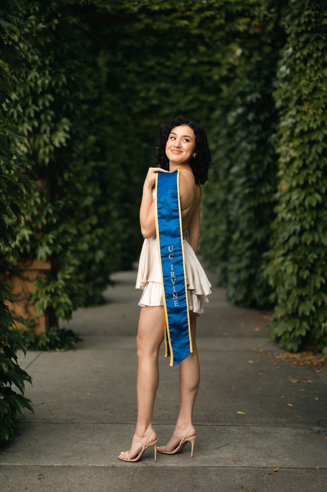

UCI Photo Spot
MSTB Arches
MSTB Arches
Graduation Photos
Professional graduation photos at MSTB. Expert lighting, relaxed vibes, 24-hour delivery.
Professional graduation photos at MSTB. Expert lighting, relaxed vibes, 24-hour delivery.
UCI Photo Spot

The Mathematical Sciences and Teaching Building, known as MSTB, is one of the most photogenic spots on the UCI campus. The repeating arched walkways create a stunning sense of depth and symmetry that makes every portrait feel architectural and intentional. If you have ever seen a UCI graduation photo with beautiful arches receding into the background, it was probably taken here.
The arches work because they create natural framing. I position you within one of the archways so the repeating forms behind you draw the eye deep into the frame while you remain the clear focal point. The curved lines soften the composition compared to the straight edges of most campus buildings, giving your photos an almost European feel.
The walkway is covered, which means consistent shade regardless of the time of day. This is one of the most lighting-friendly spots at UCI. Even on a bright afternoon, the covered arches block direct sun and create soft, even illumination that flatters your features. Add professional off-camera lighting, and the result is a portrait with gallery-quality light and a stunning architectural backdrop.
MSTB is on the north side of campus and sees very little foot traffic for graduation photos. Most graduates head straight to Aldrich Park and the Peter statue, which means the arched walkways are often completely empty. That privacy gives us time to experiment with different angles, focal lengths, and compositions without rushing.
I recommend pairing MSTB with the Science Library and Langson Library, both of which are nearby on the northern Ring Road. This three-stop route gives you nature (Science Library gardens), architecture (MSTB arches), and classic academia (Langson columns) in a compact loop.
Pricing
Per person
Per person
FAQ
MSTB stands for Mathematical Sciences and Teaching Building. It features a covered walkway with repeating arches that create one of the most photogenic backdrops on campus.
The covered arches provide shade all day, so you have flexibility. Between 3pm and 5pm, the surrounding light is warmest, which enhances the look of the archway shots.
Rarely. MSTB is one of the quieter graduation photo spots at UCI, located on the north side of campus away from the busier central areas.
Ready for stunning graduation photos at MSTB? Book your session and get your raw photos within 24 hours.
Book Your SessionExplore More